Kashiba, Nara: things to do, food and stays
Kashiba · Nara
Kashiba
Highlighted on the Nara map.
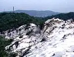
Stay
ＨＯＴＥＬ Ｄ．Ｄ
HOTEL D. D
Dining
マガジーノ
Magajino
味季 和遊
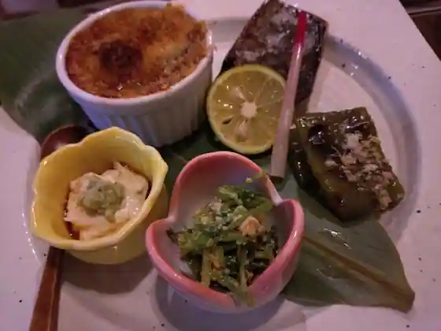
Aji Ki Wa Yu
麺の道 あをによし
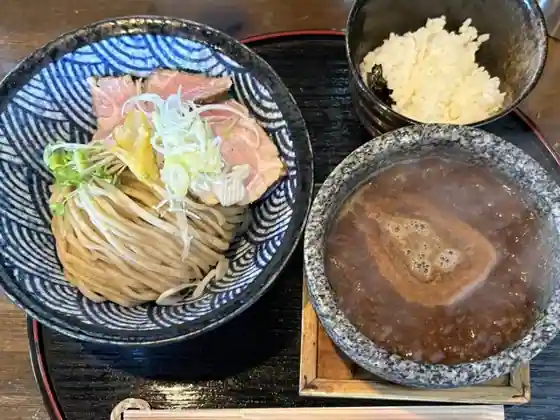
Men No Michi Awoniyoshi
洋食よだれ道
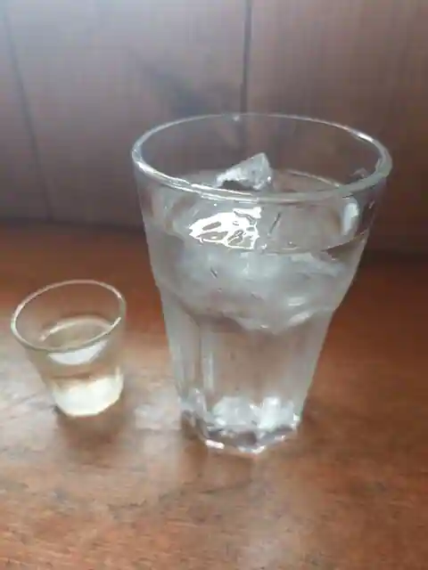
Yoshoku Yodare Michi
豚烏 総本家
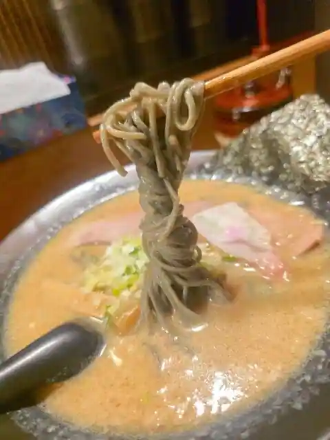
Buta Karasu So Honke
ステラリュヌ 本店
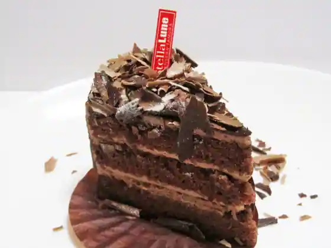
Suteraryunu Hon
こよみ
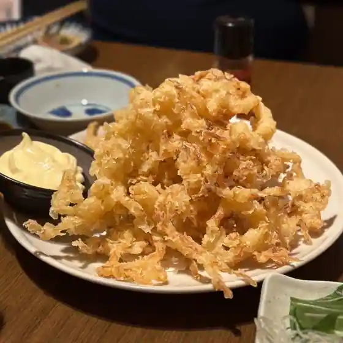
Koyomi
焼肉 奈々味
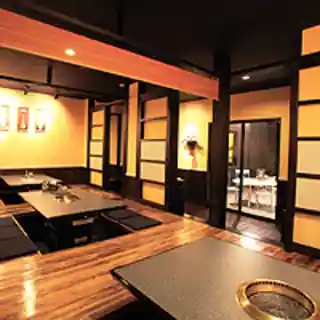
Yakiniku Nana Aji
御だんご 扇屋
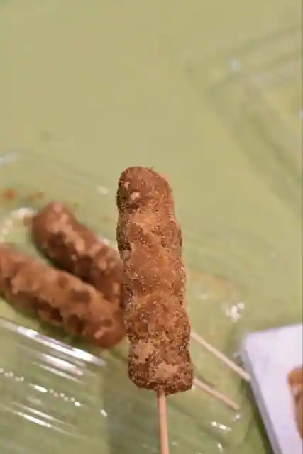
O Dango Ogiya
カフェ ポワン
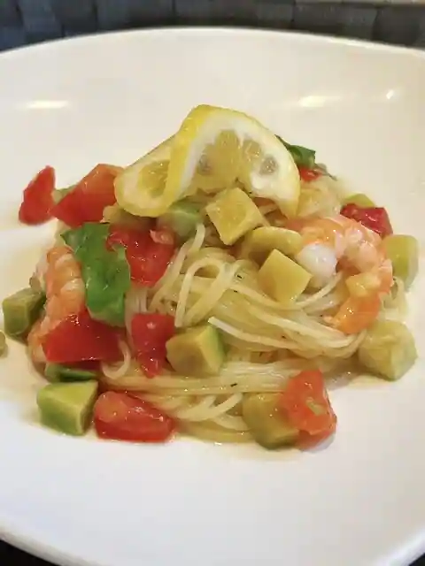
Cafe Powan
中国料理 四川亭
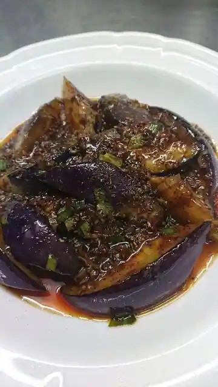
Chugokuryori Shisen Tei
モルトボーノ 広陵真美ケ丘店
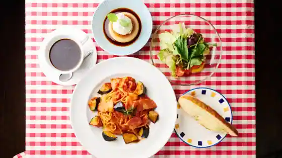
Morutobono Koryo Mami Ke Oka
ココロ
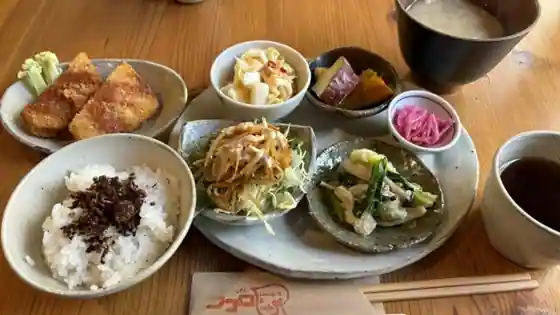
Kokoro
焼鳥とお茶漬け 風神 香芝五位堂店
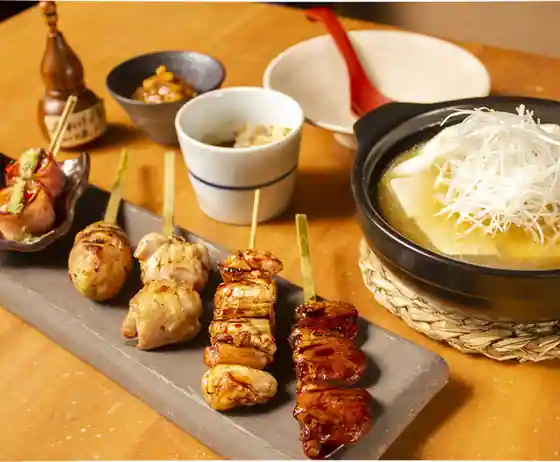
Yakitori To Chazuke Ke Fujin Kashiba Goi Do
香芝家系ラーメン まねき家
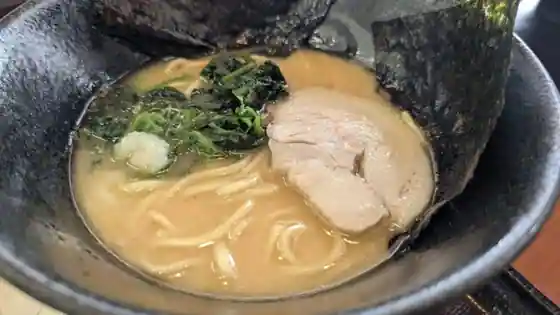
Kashiba Kakei Ramen Maneki Ie
個室焼肉 小風神 香芝五位堂店
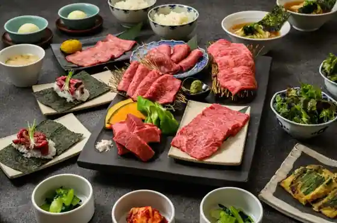
Koshitsu Yakiniku Kokaze Kami Kashiba Goi Do
じょるの屋
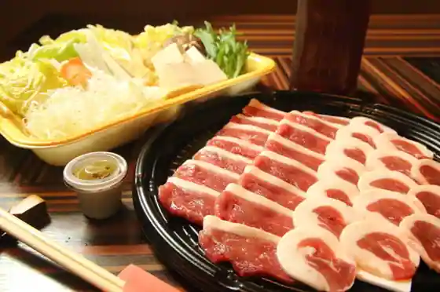
Joruno Ya
とくとく 香芝SA(上り線)店
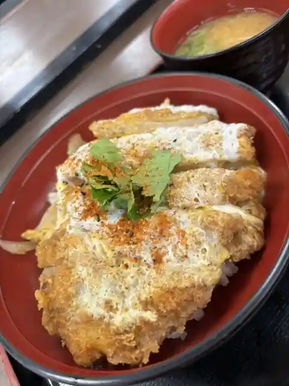
Tokutoku Kashiba SA(Nobori Sen)
シャクティ 真美ヶ丘店
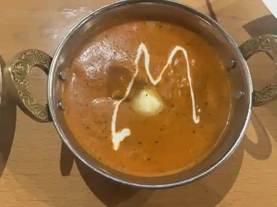
Shakutei Mami Ke Oka
咖哩店 横浜 香芝店
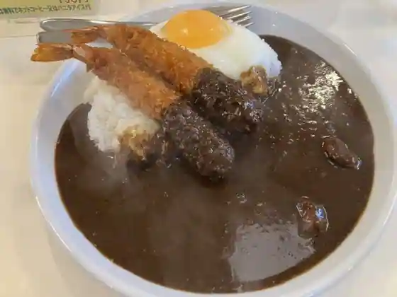
Yokohama Kashiba
文福
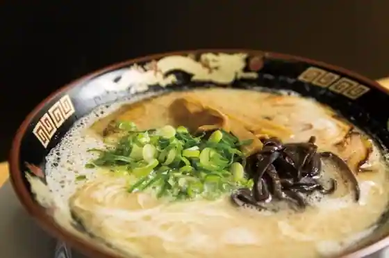
Bunpuku
シャクティ
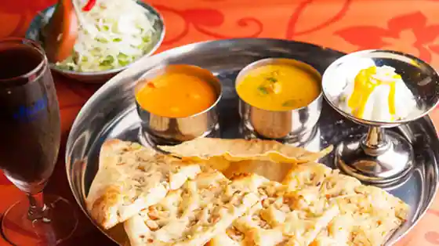
Shakutei
びっくり寿司
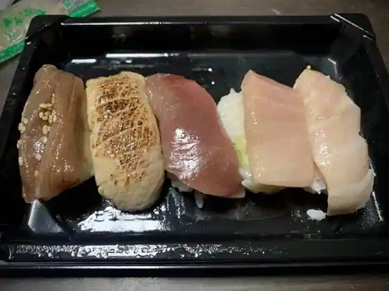
Bikkuri Sushi
紅乃屋 本店
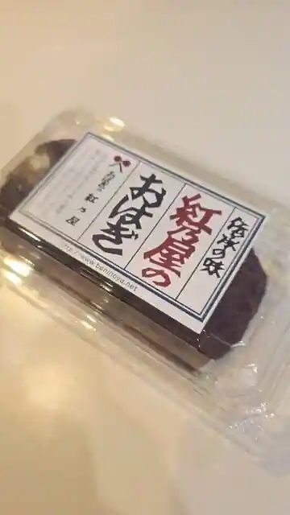
Kurenai No Ya Hon
Sights
Donzuru Mine
Kashiba Futagami Yama Museum
A Nichi Tera
Fuku O Tera